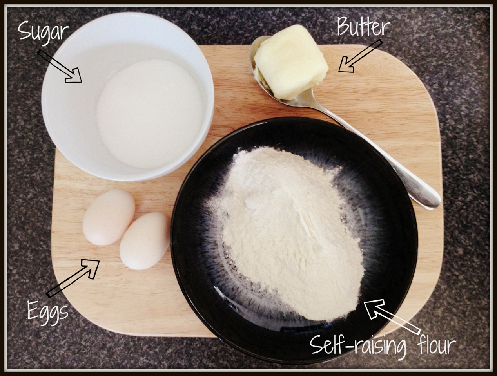
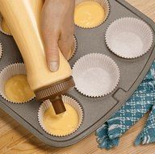
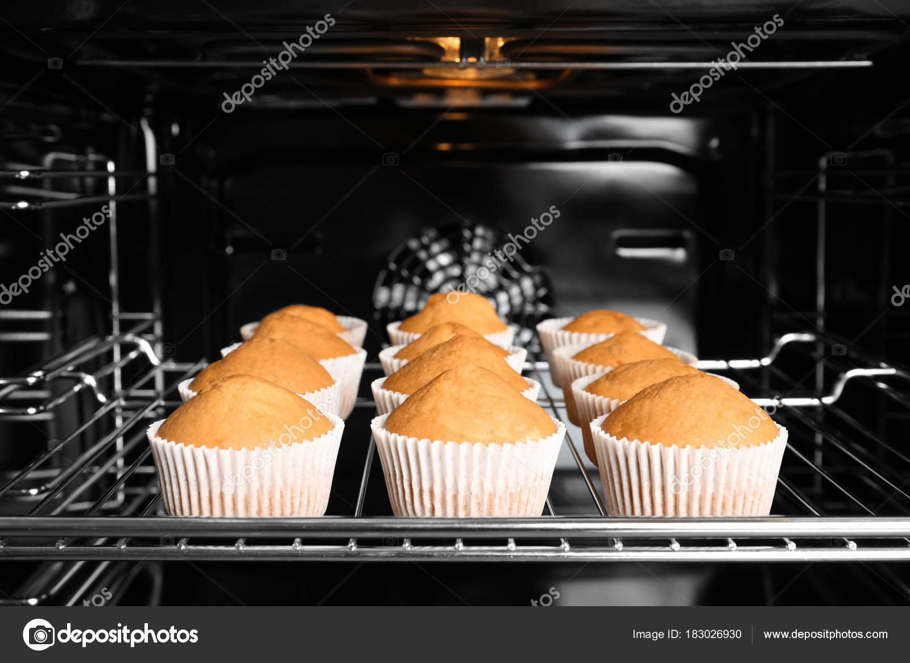
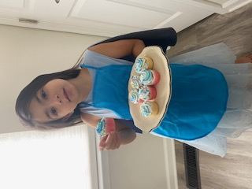
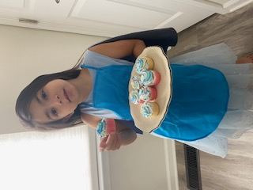

I want to teach you how to make an easy cupcakes step by step
Step 1: You need sugar, butter, eggs, raising flour, then mix all

Step 2: Divide the mixture with the cups, bake in the oven for about 15-20 mins
 Step 3: Make your favorite icing, and start decorate... YAY
 

You wanna know more about our cupcakes and our ingredients, follow me and like my pages.. Thank you